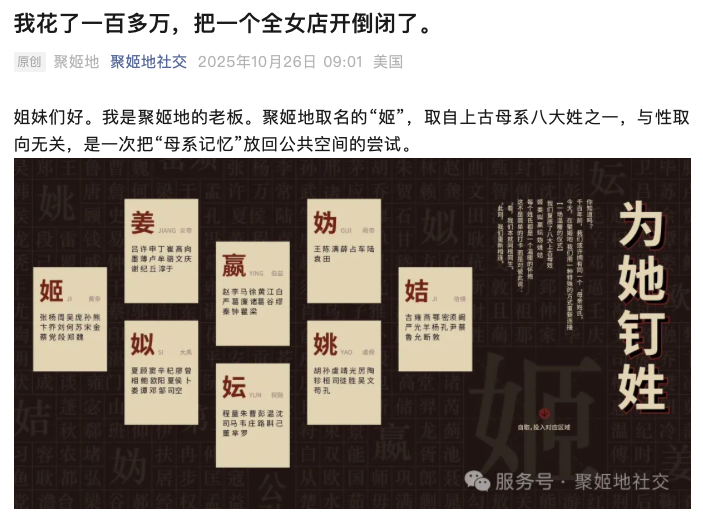
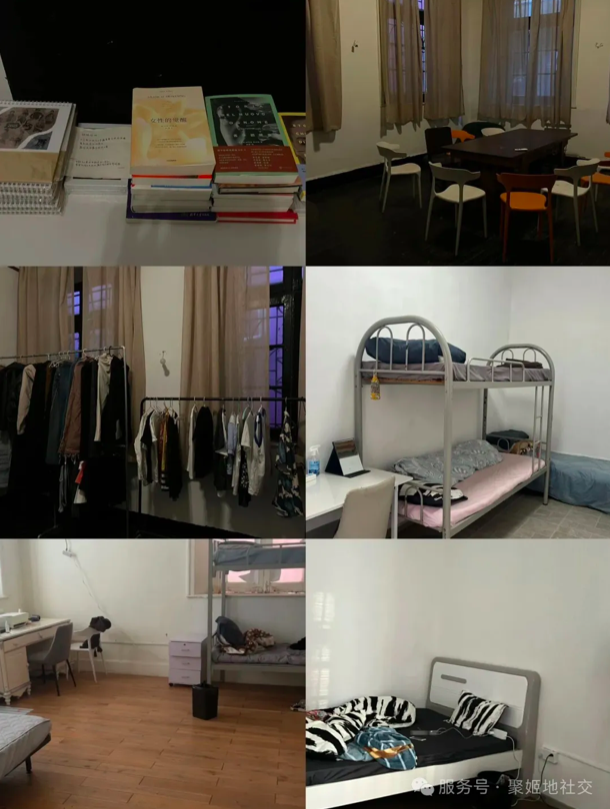
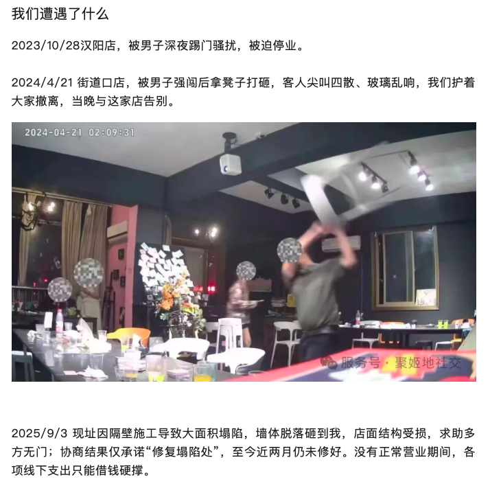

4w4y
@0voki33Me
。。。我上周在小红书刷到嬴我还以为我从小到大月贝凡赢记错了，前天考试写的嬴你们懂吗。我看到这感觉不对劲突然发现我记得没错，好吧我服了可能是我太蠢了，



中华坏女人
@feminist38
昨天，武汉全女空间「聚姬地」创办人公开发布暂停营业声明与社会求援信。据介绍，聚姬地主要为女性专属餐酒吧，同时为女性提供应急住宿、物资共享、读书交流等服务。然而，两家门店接连遭遇不明男性暴力骚扰、打砸闯入，最后一家门店因邻居施工塌陷致安全隐患被迫停业，经营屡受重创。 https://t.co/VRUwqf4akB